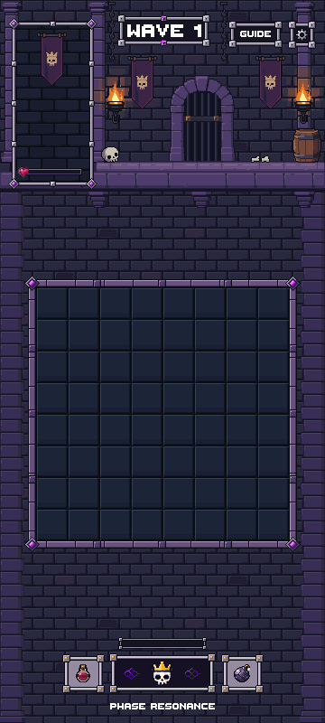
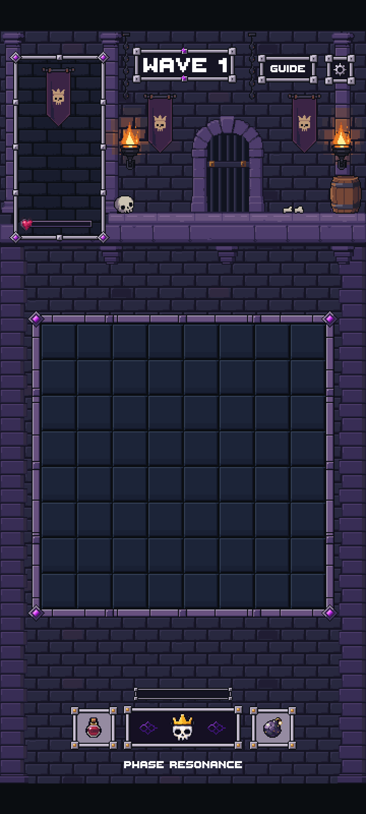
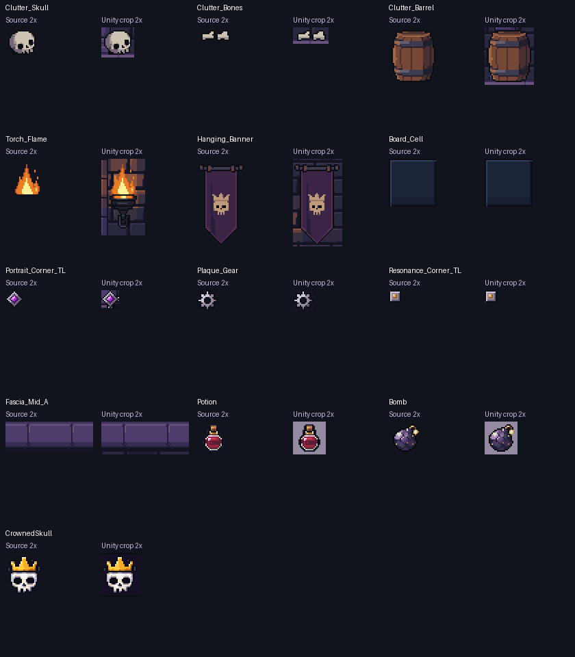
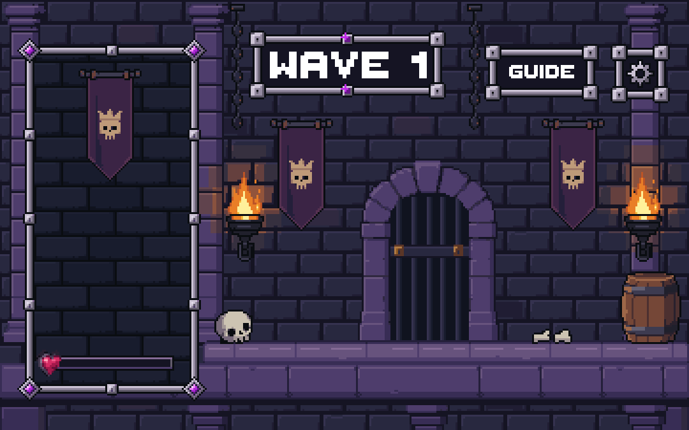
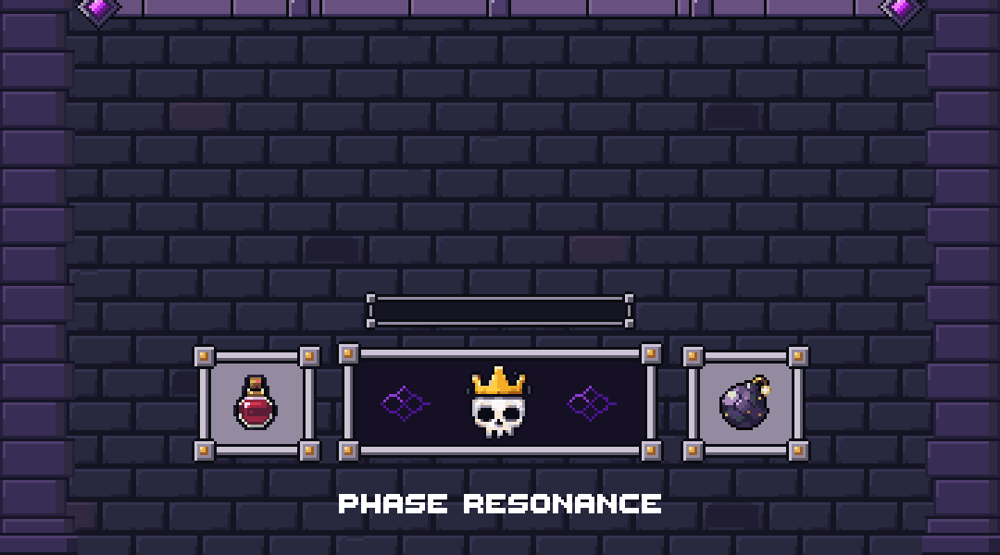

Approved art unchanged · 0 new generations · Stopped for review
These are actual Unity Game-view captures. The scene uses separate native tiles, props and modular UI pieces. All 102 library assets remain intact; the only standard-view correction is 279 pixels at floor/support overlaps. No production-game integration or merge.
Stage report · Pixel evidence · Unity validation · Approved Stage 13 gallery


Top and bottom anchor to the safe area; the board keeps its exact native size. Extra height is filled with existing masonry. The black bands in the safe-area view represent the simulated excluded device insets.
Every opaque source pixel matches its captured counterpart. Transparent gaps show the scene behind the sprite.


Gate and pillar feet sit behind the shallow floor. The single raised fascia covers corbel joins. Torches, chains, complete banners and UI remain separate pieces.

Unity preview test passed; required repository validator passed. Source hashes, native geometry, visible HUD translation and all screen captures are checked. No physical-device build was run.
The approved wall repeat is more visible in tall-screen gaps. Torch light keeps the approved angular clusters. No source was redrawn to hide those characteristics. The production layout’s minimum-width and fractional-mapping caveat remains separate from this isolated preview.
Stage 15 has not started. Awaiting your review.